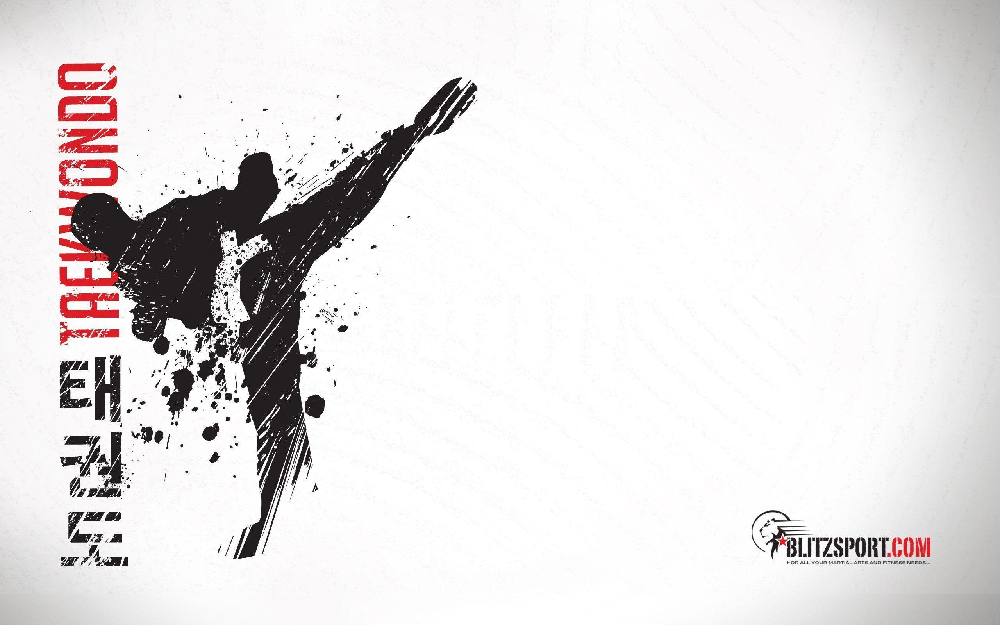
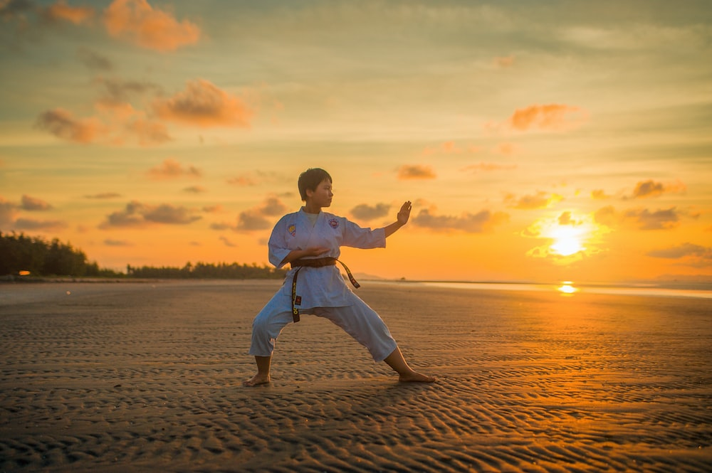

sensi Kenzee and sensi Dylan have been training for many years by master french,master joe,sensi todd and sensi greene
sensi Kenzee is a black belt in taeqwondo and is amazing with kicks and encourges students never to give up.
sensi Dylan is a black belt in taeqwondo,kangshido and zen do kai and he is amazing with his self defence he tells his students whatever they belive they can achieve
What is taeqwondo?
Taeqwondo is a Korean form of martial arts involving punching and kicking techniques, with emphasis on head-height kicks, spinning jump kicks, and fast kicking techniques.
What is kangshido?
Kangshido is a japanese martial arts that focuses on self defence and a little bit of kicks.